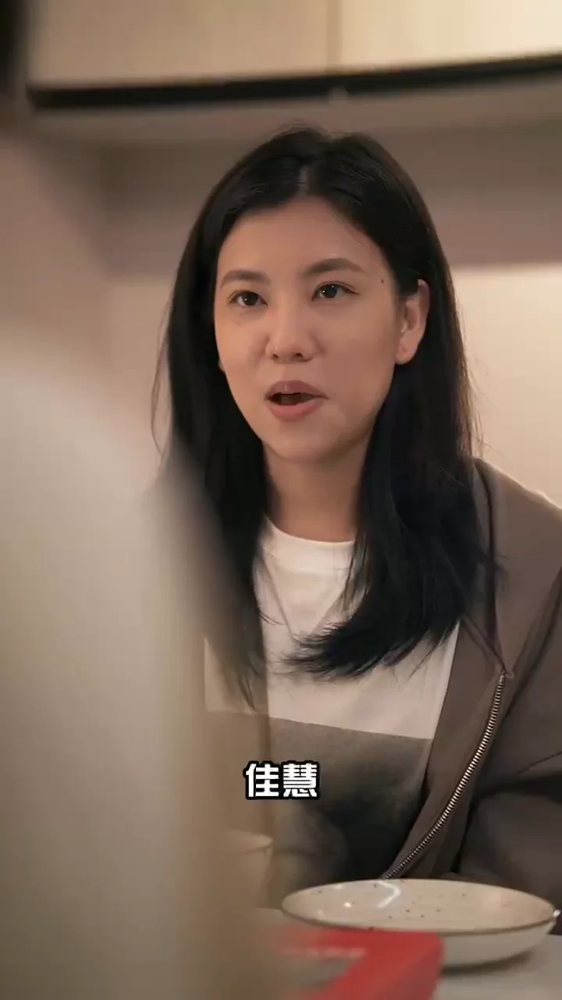
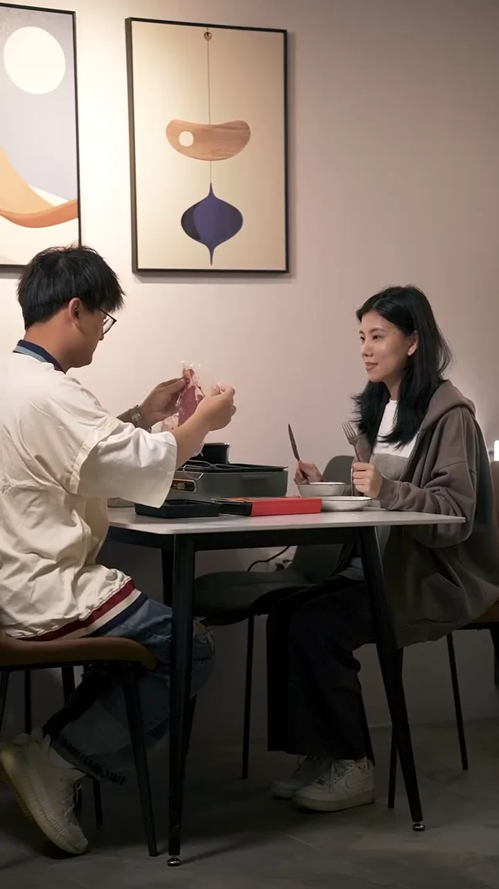
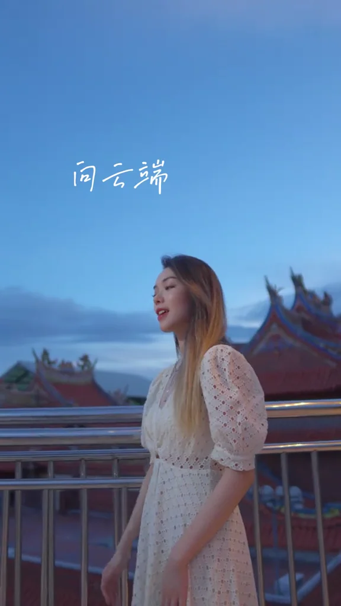
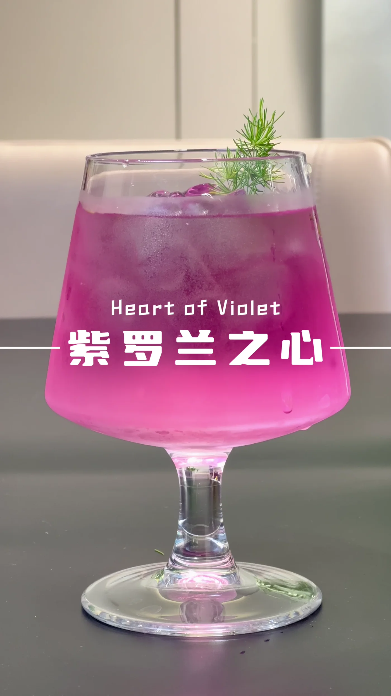
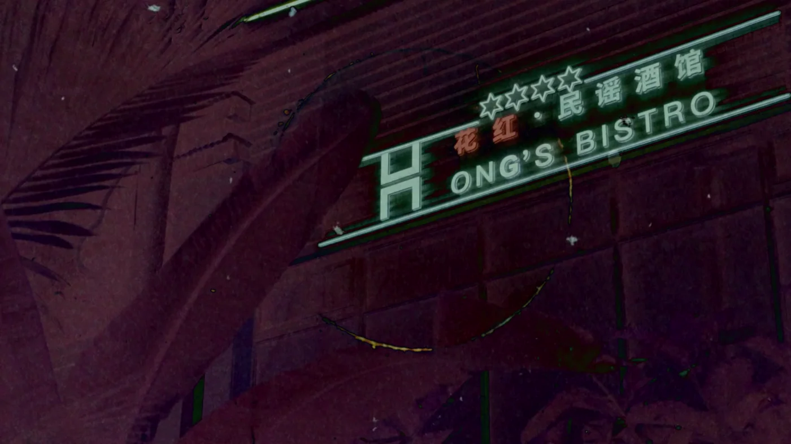
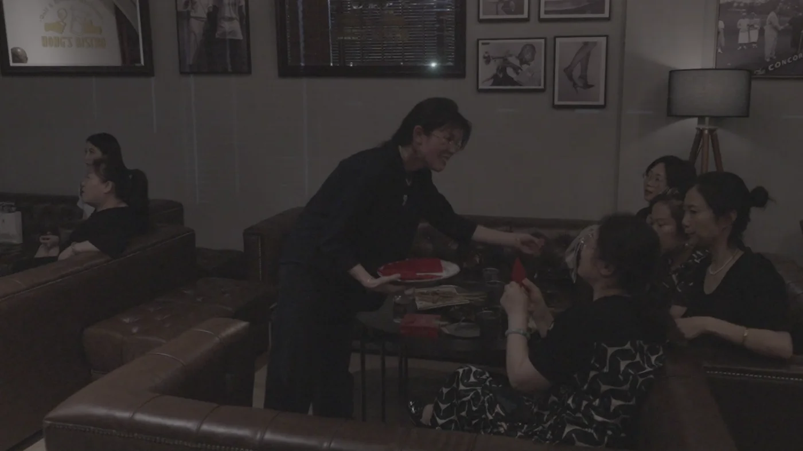
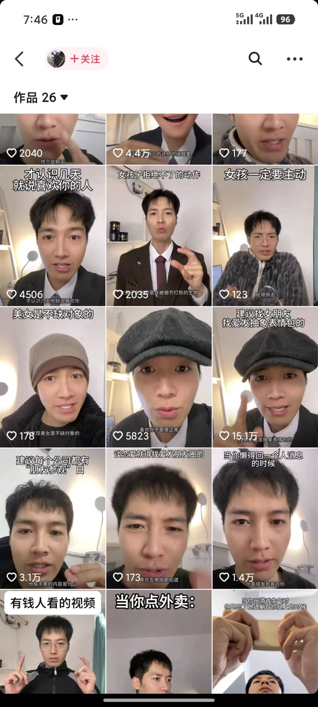

RECORDING / MUSIC MIXING
《达尔文》
演唱：赵千万 ／ 录音与混音：李家民
为朋友录制并完成混音的歌曲作品。通过实际成品，展示我在音乐录制与混音中的声音处理和听感把控。
LISTEN / RECORDING & MIX
网易云音乐 · 查看歌曲 ↗
技术不是风格。
真正重要的，是画面为何发生。
BETWEEN PROMPT & CAMERA
BETWEEN IMAGINATION & REALITY
AI × FILM × SOUND
CREATIVE PRODUCTION / PERFORMANCE / OPERATIONS
7 VIDEO WORKS / 19 VISUAL STUDIES
AI FILM + ART DIRECTION
AI VIDEO STILLS / ART DIRECTION
以下画面均为 AI 视频作品截图。
精选不同镜头，呈现光影、构图与视觉风格。
LIVE ACTION / SHOOT & EDIT
真实镜头里的光线、人物与生活。
从现场拍摄到后期剪辑的作品选帧。


拍摄 / 剪辑 · 人物对话与生活场景

拍摄 / 剪辑 / 录音 / 混音 · 真人演唱

拍摄 / 剪辑 · 饮品制作与产品质感


拍摄 / 剪辑 · 门头展示与客人互动
SOUND / TOOLS & WORKFLOW
有音乐达人录音混音与微电影声音制作经验，会使用 AI 制作音乐；熟悉 Cubase 宿主、FabFilter、Waves 等插件及软音源。
SOUND FROM SET TO FINAL MIX
RECORDING / MUSIC MIXING
演唱：赵千万 ／ 录音与混音：李家民
为朋友录制并完成混音的歌曲作品。通过实际成品，展示我在音乐录制与混音中的声音处理和听感把控。
LISTEN / RECORDING & MIX
网易云音乐 · 查看歌曲 ↗03 / PERSONAL CONTENT & ACCOUNT OPERATIONS
两个独立个人账号，两种内容方向。
一饰多角剧情 × 真人情感表达
个人账号 01 / 一饰多角剧情类
这是我独立运营的一饰多角类账号，围绕不同角色之间的关系和冲突创作剧情。《侦探》是其中一条作品，由我自己写本、出镜表演、拍摄、剪辑并运营发布。
角色剧情、人物 IP、系列短剧与剧情广告。结合角色表演和镜头制作，探索把品牌或产品融入故事的内容形式。
该条作品点赞

账号作品数据截图 · 点击查看大图 ↗
个人账号 02 / 情感类
这是另一个独立的个人情感类账号，以真人出镜、生活观察和情感话题为方向。通过选题、观点表达与生活化演绎，探索观众愿意互动和分享的内容。
情感口播、生活话题、个人 IP 与共鸣型品牌内容。结合出镜表达、内容策划和账号运营，探索持续输出的系列栏目。
单条作品最高点赞
截图可见单条 15.1 万点赞
制作能力为底，出镜与运营经验为补充。让选题、画面、声音和传播形成完整的创作流程。
EXPERIENCE / CONTENT PRACTICE
厦门大学嘉庚学院 · 广告学本科
2020 年毕业
2024.10 — 2026.02
成都星河国际有限公司
电商产品拍摄、剪辑包装与视频内容分发；参与 Shopee 平台直播讲解，整理产品话术，协助选品及客户维护。
2021.06 — 2023.10
厦门鲸起万物传媒有限公司 · 核心初创成员 / 独立负责人
脚本输出、剧情参演、拍摄与后期剪辑，参与视频投放、数据分析及甲方对接；承担短视频与微电影的同期录音、后期声音、编曲及混音。
参与运营 / 服务项目：嘻游记烤肉、花木燃、未来城市、内双咖啡店、五季顺时、海上雅歌、琼州糟粕醋、SM 百货、金承世家、中绿食品、建发股份，以及微电影《入侵者》。
2019.07 — 2021.04
厦门奇迹山商贸有限公司
担任录音师、混音师，服务音乐达人录制与混音，参与部分达人内容共创及从零起步的账号孵化。
参与服务的千万级账号包括贫穷料理、雕哥 ROSE、锦鲤小分队等；另有百万级及其他规模账号的合作经历。
这些经历构成我的内容制作与运营基础；AI 影像是我在此基础上持续探索的创作方向。
LET'S MAKE THE INVISIBLE VISIBLE.